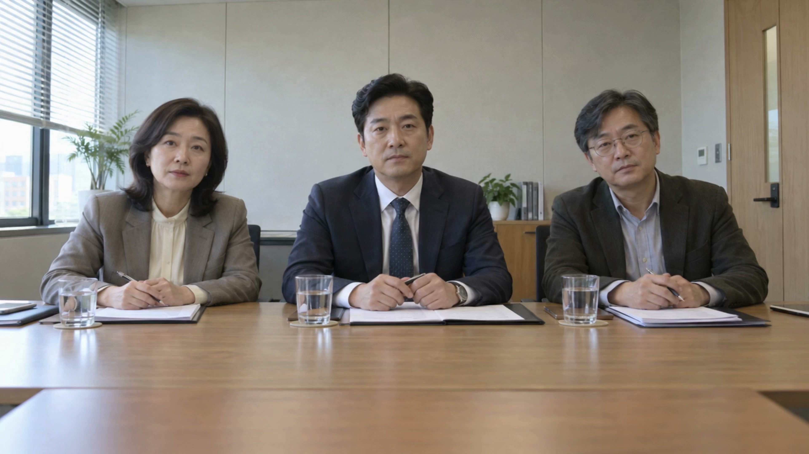

요양보호사 · 착석형 음성 면접 · 60~90초
자리에 앉으면,
면접이 시작됩니다.
고개를 돌려 방을 둘러보고, 질문에 소리 내어 답하세요.
말하는 동안에도 세 면접관의 시선과 필기는 이어집니다.

직접 입력하거나 음성 입력을 준비한 뒤 시작하세요.
2 QUESTIONS주변 벽·창문·천장은 재질 디테일을 새로 보강한 4K 이미지로 이어집니다. 재생이 버거우면 영상은 720p로 선택할 수 있습니다.
전체 인식 내용 보기
VR에서는 음성으로 답변합니다. PC 화면에서는 바로 직접 입력할 수 있습니다.
음성 입력은 처음에 약 103MB의 한국어 음성 모델과 실행 파일을 준비합니다. 명확한 답변은 자동으로 이어지고, 애매한 부분만 짧게 확인합니다. 말한 내용은 기기 안에서 처리하며, 답변과 음성을 저장하거나 서버로 보내지 않습니다.
이번 후속 질문
이번 테스트에서는 실제 경험·준비 계획을 구분해 녹화된 두 후속 질문 중 하나를 고릅니다. 추가 질문 영상 제작은 보류 중입니다. 채용 점수나 합격 여부를 판단하지 않습니다.
첫 답변 30초 · 후속 답변 25초
질문과 전환을 포함해 약 60~90초를 연습합니다. 말을 일찍 마치면 더 빨리 끝나며, 잠시 멈추거나 다시 듣는 시간은 별도입니다. 답변 뒤 약 6초간 말이 없으면 마이크를 닫고 다음 질문으로 이어집니다. 주어·경험 유무 등 의미가 애매한 부분만 확인하며, 그 부분만 고치거나 다시 말할 수 있습니다. 확인·수정 시간은 별도이며, 진행 중인 필기는 끝나는 구간까지 기다립니다.
앉은 자리에서 천천히 둘러보세요
PC는 좌우 30° 전환이 기본이며, 드래그는 직접 켤 수 있습니다. VR은 실제 고개 움직임을 그대로 따릅니다. 어지러우면 바로 중단하세요. 면접관은 단안 영상이라 몸을 크게 옮겨 옆모습을 볼 수는 없습니다. 착용감과 프레임 성능은 실제 Quest에서 다시 확인해야 합니다.